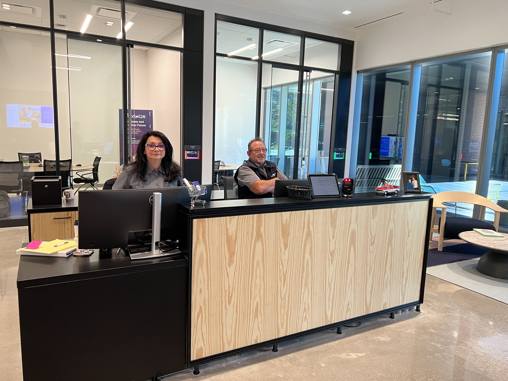
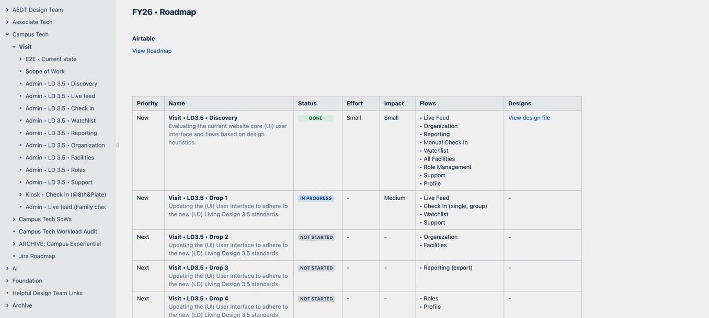
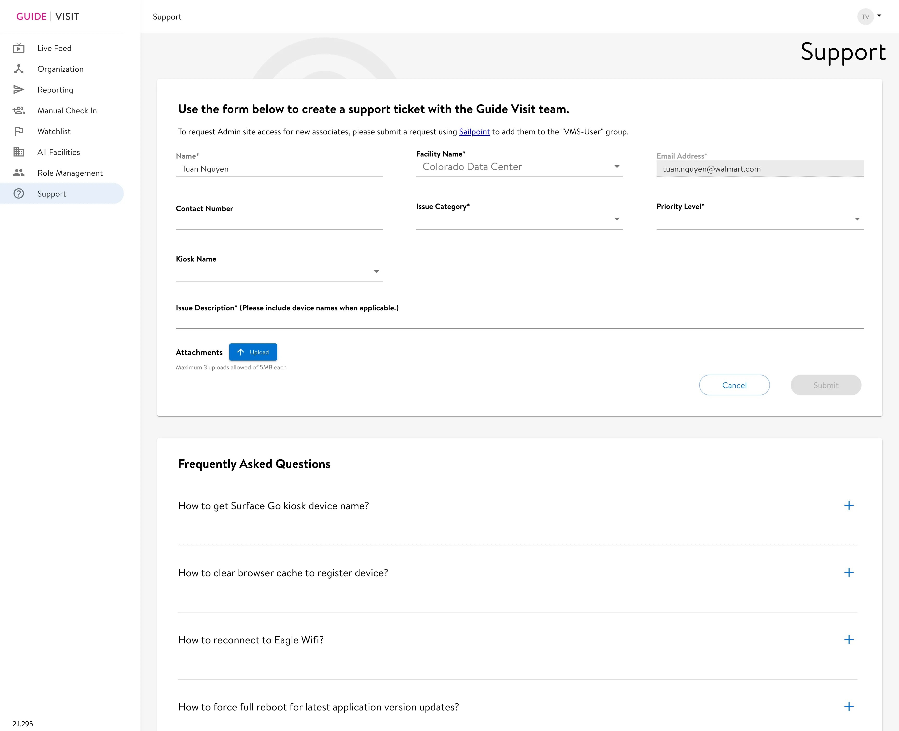
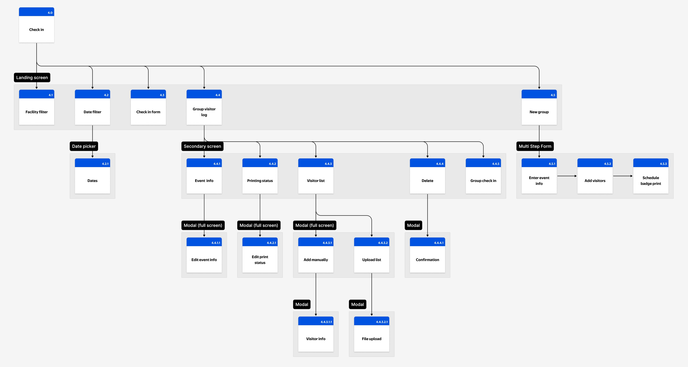

The tool that keeps campuses safe
How I turned years of accumulated inconsistency in Walmart's visitor management admin portal into a strategic foundation, shipping targeted improvements under tight constraints while preserving the vision for a full redesign.


Mission-critical infrastructure, quietly degraded
The Visit Admin Portal is the internal CMS used by front desk associates and security teams across every Walmart campus. Every check-in, every watchlist flag, every badge, every security escalation flows through it, and it had been accumulating years of inconsistency. Legacy patterns mixed with newer modules, navigation had grown without a unifying model, and staff had built workarounds that made the real failure rate invisible in usage data.
The product was eroding everywhere at once, in ways that only surfaced when the pressure was highest. I led this as the lead designer, working alongside a mid-level designer and cross-functional partners across PM, engineering, security, and workplace ops.
Understanding the failure modes before designing anything
I ran a heuristic evaluation across all eight modules, mapping violations against Nielsen's 10 heuristics. The goal: a shared diagnostic artifact for team alignment, not just a UX audit. Where is the system breaking trust, and what's the operational consequence?
Twelve failure patterns emerged. The most consequential are below.
Designing within real constraints, intentionally
The original proposal was a full IA overhaul. Mapping the existing structure showed why: eight top-level modules and roughly thirty screens, all sitting flat off the root with no grouping layer to tell operational work from configuration. Then engineering capacity shifted to the kiosk and preregistration rebuild, and the scope had to be renegotiated.
Rather than spread thin across the whole product, I scoped Phase 1 to one thing: migrate to LD 3.5 and ship targeted usability fixes (no IA changes).
Every decision was made with Phase 2 in mind, keeping the IA work documented and queued for when capacity returned.
Phasing also de-risked adoption. Many front desk associates are long-tenured Walmart employees, some with 20+ years on the legacy manual process of typing and printing each visitor by hand. A big-bang launch would have meant heavy retraining and real resistance. Shipping incrementally let them absorb the new interface a little at a time, on familiar ground.
How we addressed the constraints
- Phased PRD with the PM: Phase 1 improvements scoped to fit engineering capacity, no IA changes, giving teams predictable delivery drops
- Four priority modules: Live Feed, Check-In, Watchlist, Support selected by operational frequency and failure severity
- Manual Check-In fast-tracked as a standalone proof-of-concept after kiosk outages created an acute need
- Adoption built in by design: incremental releases gave long-tenured associates time to adjust to the new interface, avoiding the retraining burden and resistance of a single big-bang launch
- Phase 2 IA documented and socialized: kept visible throughout Phase 1 so stakeholders read the phasing as strategy, not compromise

Establishing a consistent operational foundation
Phase 1 was about removing friction from workflows front desk associates run dozens of times a day, without the structural IA changes engineering couldn't support yet. One filter for every decision: does this reduce error risk or cognitive load at the front desk?
Live Feed
The first screen every morning. It answers one question: who's on campus, and who isn't accounted for? Phase 1 redesigned the information hierarchy so that answer is immediate, with inline actions for the most common tasks.
- Active / Completed / Planned visit counts surfaced as scannable header metrics
- Consistent tab filtering aligned with Live Feed, Checked In, Checked Out, and Preregistered states
- Inline contextual actions (Check out, Print badge, View profile) exposed without needing to open a modal
- Status badges standardized using LD 3.5 semantic tokens for consistent color encoding
Manual Check-In
Manual Check-In kicks in at the worst moments: kiosk outage at morning rush, a 30-person group with incomplete preregistration, an NDA visit. Failure here creates a security gap. The redesign restructured the form around how staff actually work and separated destructive actions with appropriate visual weight.
- Required fields clearly labeled with asterisk + inline guidance
- NDA acknowledgment checkbox added for regulated visits
- “Clear all” and “Check in” separated, with the destructive reset action de-emphasized
- Facility and date filters moved into the group visitor list, scoping them to the visits they actually affect. Their old spot at the page top implied they filtered the whole screen, including the single check-in form they never touched
- Group visitor log surfaced on the same page, no context switch needed

Watchlist
If your ex threatens to show up at your workplace (yes, this happens), the front desk and security can add them to the Watchlist. The module covers domestic threats, labor disputes, and police notifications, and when a flagged visitor attempts entry, the front desk needs to recognize the alert and respond with confidence. Ambiguity here has direct safety consequences. The redesign introduced semantic status badges, separated active and archived states, and scoped actions to what's appropriate per record.
- Semantic status badges with text labels (Caution, Critical, Awareness), replacing icon-only indicators
- Active / Archived / All tabs clearly separate record states
- Actions scoped to record state: archive appears only on active records
- Table density reduced for faster scanning during high-stress moments
Support
A kiosk failure during morning rush needs to be resolved in under two minutes. The old Support module made that harder: FAQs were buried, unsearchable, and there was no way to track tickets. The redesign flips the hierarchy: self-service first, ticket submission as a last resort.
- FAQ-first layout with full-text search: most issues resolvable without submitting a ticket
- Accordions for fast scanning: category, then content on demand
- Track support requests link surfaced in the header, ticket status visible without a separate workflow
- FAQ search is the primary action on the page; “Create support ticket” sits below it as a secondary CTA for the cases self-service can't resolve

Manual Check-In: designing for the hardest moment
All four modules got Phase 1 improvements. Check-In got more. A confused staff member during a 30-person group check-in creates a gap in the visitor record that compliance depends on.
- Reworked task flow: clarified the decision point between single and group check-in at the landing screen
- Multi-step form with clear structure: Enter event info, add visitors, schedule badge print, with explicit stage labels
- Bulk upload with error indicators: CSV data appears in an editable table with inline error flags; bad data no longer enters the system silently
- Inline editing in data table: correct any visitor detail without navigating away or restarting the flow
- Undo after destructive actions: removing a visitor triggers a snackbar confirmation with an Undo option
- Flexible badge printing: print now or schedule for a specific printer, date, and time
- Full accessibility annotations: WCAG 2.1 AA coverage for contrast, focus order, error messaging, and keyboard interaction across all states


Full WCAG 2.1 AA annotations covering contrast ratios, focus order, error messaging, field requirements, and keyboard interaction across every state, delivered alongside every Hi-Fi screen.
The IA redesign that was always the plan
With more engineering capacity now available, the team is moving into the IA redesign Phase 1 held space for. The goal: navigation that matches how staff actually work.
"A front desk associate who has never used the tool can complete a group check-in during a kiosk outage without asking for help."
What this project reinforced
-
1
Constraints shape the design work. The most important design work on this project was the strategic scoping conversation that turned limited engineering capacity into a coherent delivery plan. Knowing what not to ship, and why, is a skill.
-
2
Diagnosis before prescription. The heuristic evaluation served as a stakeholder alignment tool. Framing problems in terms of operational consequence rather than design principle gave a cross-functional team a shared language for prioritization.
-
3
Internal tools have real stakes. It's easy to treat enterprise tooling as lower-stakes than consumer products. But for front desk associates managing security incidents, every ambiguous button and missing error state is a moment of exposure. Design quality in operational tools is a safety question.

Campus Navigation Subsystem
A navigation sub-design-system inside Walmart's LD 3.5 framework, standardizing map, search, and location experiences across products used by associates campus-wide.